Дякую за бажання стати Наставником для дитини
Зареєструватися
в ЦССССДМ
документівПройти навчанняЗнайомство з дитиною,
підписання договору
в ЦССССДМ
До наступного кроку
Зібрати пакетдокументівПройти навчанняЗнайомство з дитиною,
підписання договору
Крок 1. Реєстрація
1. Звернися в Центр соціальних служб в твоєму районі:
Телефон
+38 (063) 222 12 12+38 (063) 222 22 12Адреса
м. Львів,вул. Богдана Божка 12
2. Роздрукуй свою анкету кандидата в наставники і
візьми її з собою в Центр соц. служб, щоб заощадити
свій час:
Крок 2. Підготовка документів
1. Звернися в твоє регіональне відділення Міністерства
внутрішніх справ для отримання довідки про несудимість
або замов її Online. Знайди контактні дані на карті:
2. Пройди медогляд. Якщо тобі не дали форму для
огляду, то ти можеш її завантажити тут:
3. Віднеси зібрані документи в Центр соціальних служб:
1. Довідка про несудимість2. Висновок про стан здоров'я
Крок 3. Підготовка до зустрічі
1. Пройди співбесіду з психологом Центру
соціальних служб
2. Пройди тренінг для наставників.
Його тривалість 4 дня
Підтвердіть що ви пройшли тренінг
Для цього введить свій ліцензійний номервиданий Центром соціальних Служб:
Вітаємо!
Ви успішно пройшли тренінгдля наставників!
Крок 4. Зустріч
1. Знайомство з дитиною
2. Підписання договору.
Ознайомся попередньо з договором